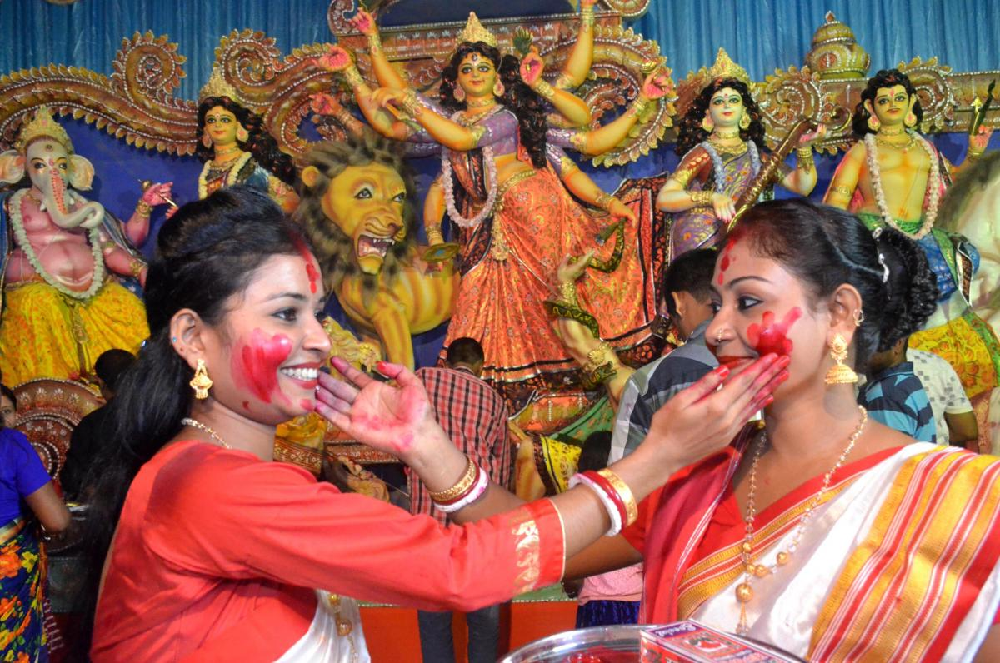
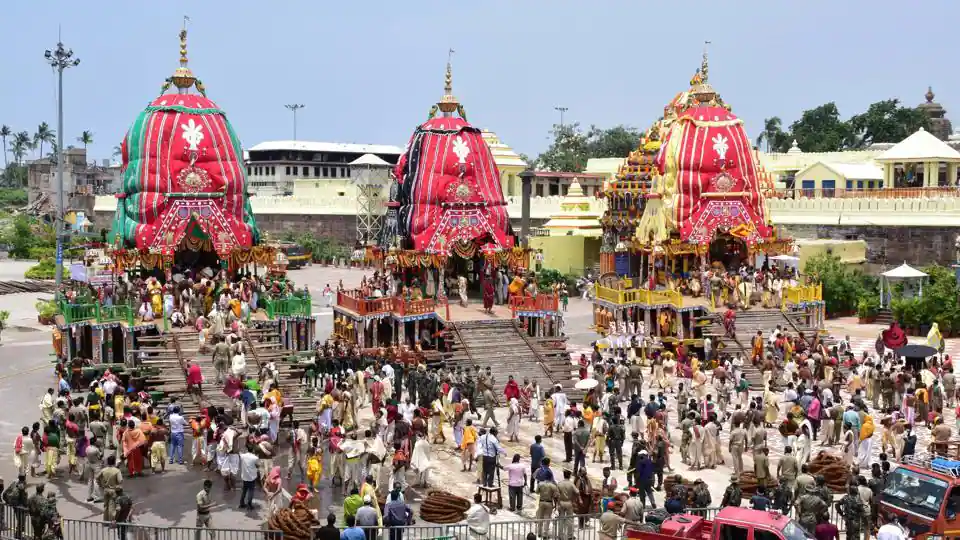
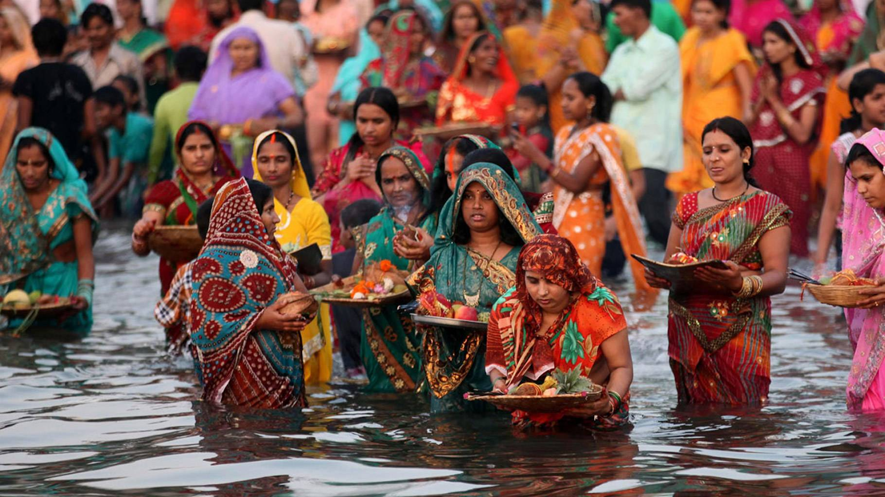

WEST Indian Festivals
Click on Back to Home Page
When we are talking about the eastern part of India, we shouldn’t miss out on Durga Puja. Being a cultural hub of the country, West Bengal celebrates Durga Puja with full devotion, enthusiasm, and passion.
Hench, this one is one of the most amazing festivals in India. However, West Bengal is not the only place where Durga Puja is celebrated. Neighboring states like Bihar, Odisha, and Jharkhand celebrate Durga Puja with the same enthusiasm. |
Rath Yatra is the biggest festival in Odisha. A grand celebration that is dedicated to Lord Jagannath. The devotees participate in the huge chariot yatra with the deities of Lord Jagannath and his siblings Balaram and Subhadra.
The construction of the chariots began two months prior to the celebration. Puri is the main center of Rath Yatra. Besides Odisha, West Bengal also celebrates Rath Yatra. |
Chhath Puja is one of the most popular festivals of Bihar. Being an ancient land, Bihar has a deep root in religion. Well, Chhath Puja is dedicated to Sun God and his wife Chhatti Maiyya. Devotees have to follow several rituals to complete this puja.
|